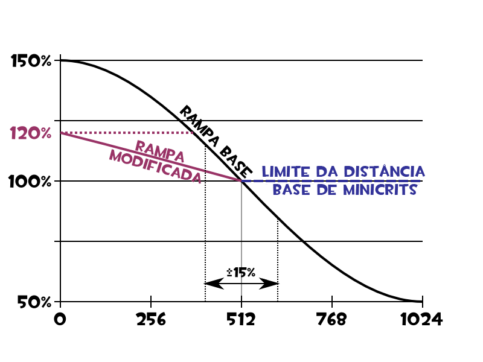
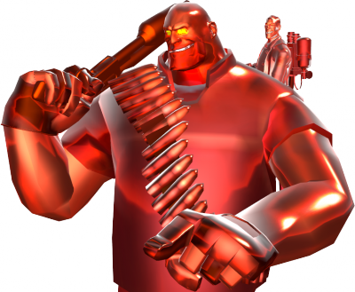
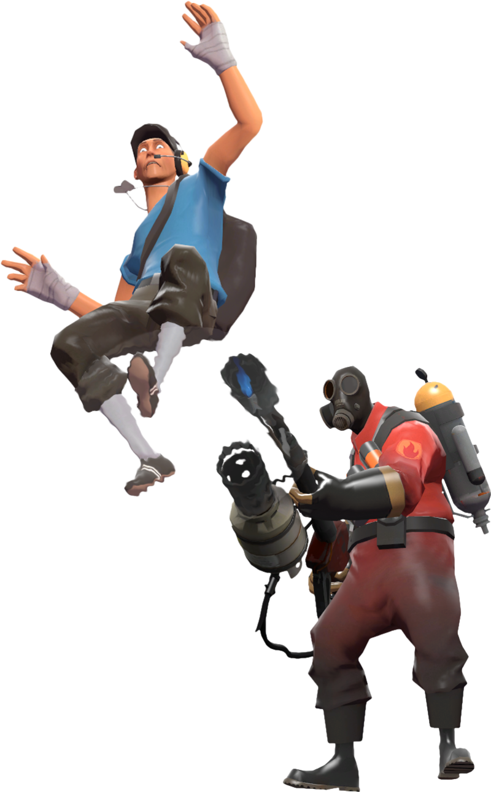
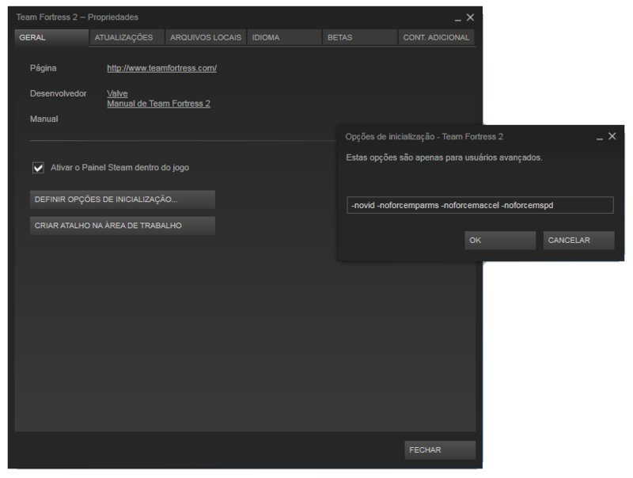

Existem diversas mecânicas no TF2. As mecânicas do Team Fortress 2 definem as regras e capacidades de jogadores, servidor e editores de conteúdo. Entendendo essas mecânicas permitem um jogabilidade melhor e mais compreensível. Dano A maioria das armas armas causam danos para os Pontos de HP. A menos que o servidor seja modded, armas não causam o friendly fire, apesar de que muitas armas sejam capazes de danificar os seus utilizadores. O dano da arma está sujeito a uma série de variáveis, embora a grande maioria das armas não causam dano de localização (sendo as principais exceções Sniper headshots e Spy backstabs). A maioria das armas lidam com o aumento de dano quando os alvos que estão próximos e reduz os danos quando os alvos estão longe, embora minicrits não estão sujeitos a isso, e Críticos estão sujeitos a nenhum dos dois. modificadores Distância para danos são baseados na distância entre o atacante e o alvo (por oposição à posição do atacante quando o ataque foi feita pela primeira vez). dano explosivo é reduzida a distância do alvo dos aumentos a explosão no centro. Enquanto a maioria das armas explosivas podem prejudicar seus usuários, eles tendem a conceder a redução de danos no usuário se o ataques for do próprio usuário.  Detecção de Acerto A maioria das armas são armas de projéteis ou armas hitscan. Armas de projétil, como o Lança-Foguetes, produzem objetos em movimento com o posicionamento e efeitos determinado pelo estado do servidor do jogo, o que pode torná-los menos confiável para jogadores com alta latência. Projéteis costumam ter regras únicas de física aplicada a eles separado do jogador, e jogador de velocidade não é usada para determinar a velocidade inicial dos projéteis. Projéteis não se geram a partir do centro da tela, mas do lado em que a arma é realizada (a mão direita Soldier produz foguetes a partir do seu lado direito). Projétil de detecção de colisões não usam o model-conforming hitbox, ao invés de usar grande, singular, projéteis de posição baseada somente de hitboxes que englobam totalmente o modelo de jogador (por exemplo, a posição de Heavy tem a detecção de ocorrências mesmo projétil como o Scout). Os ataques de fogo do Pyro são baseados em partículas de fogo (e.g. ataques do Lança-Chamas) seguem mais a mecânica de armas de projétil. Armas Hitscan produzem ataques "acerte-ou-erre" instantâneos, em vez de projéteis. Armas de corpo a corpo ou armas que produzem balas são geralmente hitscan. Armas Hitscan determinam a colisão com base no estado de jogo do atacante (ao contrário de projéteis, que usam o estado do servidor do jogo), que podem produzir ocorrências bastante dispersas tipo "Eu já tava atrás de uma cobertura; como aquilo me acertou?". Armas Hitscan são produzidas a partir do centro da tela, mesmo que os efeitos visuais parecem sugerir o contrário. Armas hitscan não-melee usam modelos de hitbox que são justos (um Heavy parado seria realmente um alvo muito maior do que um Scout agachado), armas de corpo-a-corpo usam o mesmo grande hitbox que é usado pelas armas de projétil. Tipos de arma Cada classe tem um conjunto exclusivo de armas à sua disposição ocupando os teclas 1, 2 e 3 (muitas vezes referida como primária, secundária e melee, respectivamente). Algumas classes podem ter teclas adicionais, como o PDA do Engineer e o Disguise Kit do Spy. As escolhas que os jogadores fazem de armas e de itens constitui a sua loadout. A maioria das armas não-melee exigem munição para o uso. Armas que usam munição de reserva pode ser baseado (com um tamanho do clipe limitado e exigindo recarga da munição armazenada, como a Pistola) ou totalmente carregado (capaz de usar toda a munição sem recarga , Como a Metralhadora Giratória). Armas baseadas em reservas usam tanto o estilo de recarga em estilo de "clip" (recarregar enche a arma de munição em um único, um momento de animação, tais como o Revólver) ou recarga seqüencial (recargas de munição de uma reserva uma por vez , como a Escopeta). A recarga pode ser interrompida por atacar ou mudrar de armas, embora o tempo de recarga (além do incremento de munição última realizada, no caso de armas seqüenciais) é desperdiçado. Ao recarregar uma arma de recarga seqüencial, uma animação diferente é usada para recarregar a munição de primeiro munição subsequentes (por exemplo, um esvaziamento Lança-Granadas leva 1,24 segundos para recarregar uma munição, além de 0,6 segundo para cada munição, após isso). Efeitos de Estado Efeitos de Estado incluem uma variedade de condições de armas induzidos pelo jogador, como Fogo e o Sangramento. Todos os efeitos de estado são removidas por morte ou mudança de classe, e a maioria são removidas por ÜberCarga. Alguns podem ser removidos por submersão na água água ou cura. Existem vários, como ÜberCarga, boost de minicrit, sobrecura/overheal, fire, sangramento, slowdown,etc.  Knockback A maioria das armas, pelo menos, produzir algum tipo de Knock back (apesar de muitos podem ser muito pequenos para perceber). Modificadores de ataque para fazer o knock back incluem danos, Critical hit ou Mini-Crit, e os efeitos de armas específicas. Knockback pode ser usado para manipular o posicionamento e movimento dos jogadores, especialmente os de inimigos através juggling e de si mesmo através de Rocket jumping ou Sticky jumping. Algumas armas e habilidades, como a Forçe-A-Nature e o Rajada de ar, são baseados na funcionalidade bater de um único knock back. Alvos com ÜberCarga são menos influenciados pelo knock-back inimigo do que alvos normais, e Spies Disfarçados não estão sujeitos sofrer um knock back das armas do inimigo.  Configurações Há uma variedade de maneiras para configurar o cliente do Team Fortress 2. Os jogadores fazem escolhas na constituição de TF2 que podem ter impactos sobre a interação do jogo, desempenho e apresentação. A maioria destes métodos de personalização não estão disponíveis em versões de console do jogo, salvar opções do menu principal.  |